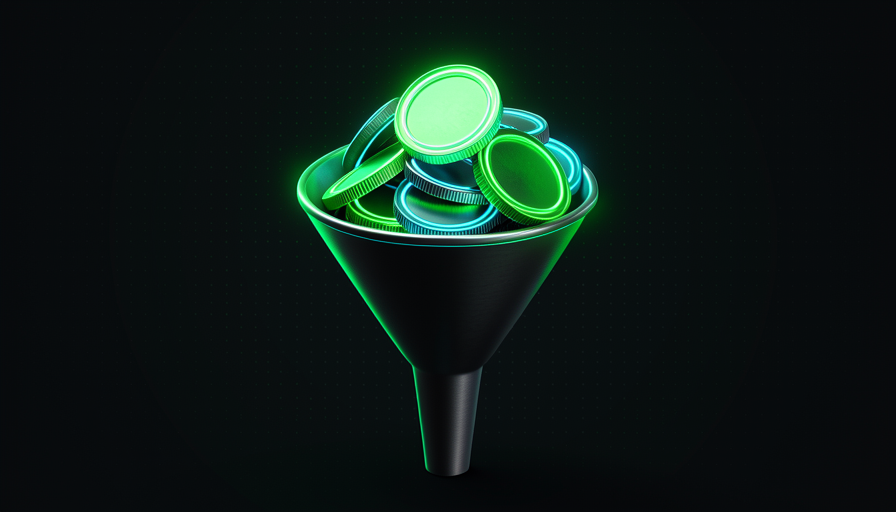
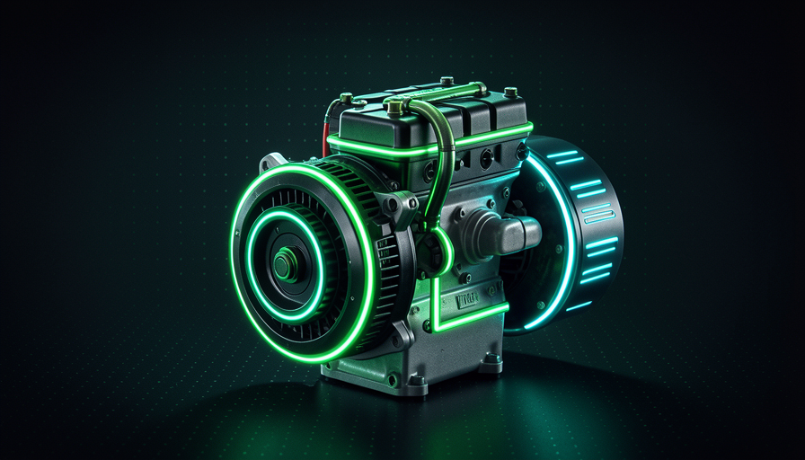

📖 Living glossary (read first — come back whenever you need to)
This module covers cost. First, get clear on what a token — is the “currency” you spend when you use AI. You’ve already seen the other terms in modules 1.1–1.4; here they return, applied to your wallet:
🏗️ Architecture reduces tokens
🧠 Imagine it this way: you ask a courier to drop off a package. At a house with a clear address and a gate out front, they deliver it in 2 minutes. In a maze-like apartment complex with no signs, they walk in circles for half an hour — and you pay for their time. The package is the same; the terrain is what determined the cost.
Matt Pocock’s key point on this topic is straightforward: "How do you optimize token usage? By having a codebase that’s easier to change." Notice: his answer no is “use a magic prompt” or “wait for a better model.” It’s architecture — how your codebase is organized. Every time the agent needs to understand the code to change something, it reads files (input tokens) and writes attempts (output tokens). The more confusing the terrain, the more it needs to read and try — and the token spend goes up.
Why is this foundational and not a detail? Because the cost of AI is charged by token — both what goes in and what comes out. A giant file with a thousand lines forces the agent to swallow everything just to change one function. A modular codebase (small files, obvious names, everything in its place) lets the agent read only the relevant piece. Same task, same model, a fraction of the tokens. The common mistake for beginners is treating AI costs as a fixed number on the bill—when, in fact, they're a direct consequence of how navigable you've made your code.
Same task, same model. The cost difference comes entirely from the architecture.

⚠️ Common beginner mistake
Think that "AI is expensive" is the model's fault and that the solution is to subscribe to a bigger plan. Almost always, it's the opposite: the codebase is forcing the agent to read and try far more than it needs to. The bill is a symptom of the architecture.
In one sentence: a codebase that's easy to change is a codebase that's cheap to change — because the agent reads and tries less.
Going deeper (optional): why "token" and not "word"?
Models don’t read letter by letter or word by word—they break text into "tokens," chunks that occur often in the language (prefixes, suffixes, short whole words). A common word becomes 1 token; a rare or long one becomes several. That’s why pricing is per token: it’s the unit the model actually processes. A practical estimate for Portuguese/code: divide the number of characters by ~4 to get the rough number of tokens.
🛡️ Guardrails save you from painful mistakes
🧠 Imagine it this way: those bumpers in kids’ bowling alleys. The child doesn’t need to be a professional bowler to knock down pins—the bumpers guide the ball for them. Guardrails do this with AI: it doesn’t need to be brilliant if the codebase pushes it back onto the right path.
Pocock uses a great image for the cost: without protection, the model becomes "banging your head against the wall" — trying, failing, trying again, burning tokens with each attempt. The solution isn't a smarter model: it's guardrails. A guardrail is anything in the codebase that prevents the wrong path and points the right one: a type (type) that won’t compile if you pass the wrong value; a test that fails immediately; a linter that complains; a clear error message that says exactly what’s missing.
The reason is pure cost: each guardrail turns a expensive facepalm (the agent discovers the error late, after rewriting half the system) in a cheap fix (the error appears immediately, on one line). Pocock sums it up: "better guardrails, fewer tokens banging their heads against the wall." O common mistake here, the opposite happens—people remove tests “to go faster.” Without guardrails, AI stumbles around in the dark, makes bigger mistakes, and costs you more with every step.
🔬 Worked example: the type that saves 10 attempts
AI needs to call a function enviarEmail(destino, assunto, corpo).
No guard rail
The function accepts anything. The AI calls enviarEmail(corpo, destino) swapped. Nothing complains right away. It only breaks when it runs; she rereads everything, tries again, rereads it again… 8 attempts, thousands of tokens.
With a guardrail (type)
Parameters have types. On the first wrong attempt, the type checker screams "destination expects Email, received Text". The AI fixes it on the spot. 1 attempt, few tokens.
In one sentence: a guardrail is the low wall that helps the AI get it right without being a genius—and every time it gets it right immediately, it saves tokens.
🪙 When a dumber model is enough
🧠 Imagine it this way: in a well-organized kitchen—everything labeled, sharp knife, recipe on the counter—even a beginner cook can make a decent dish. In a chaotic kitchen, only an experienced chef can manage. The kitchen (the harness) determines what level of cook (model) you need.
Here's the heart of the module, in Pocock's words: "Have a codebase that's easier to make changes in → you can employ a stupider/cheaper model to do the same work." Notice the logic: the model's required capability isn't fixed — it depends on how difficult you’ve made the task. A good harness lowers the bar of intelligence required. That's why a cheaper model can deliver what, in a bad codebase, only an expensive model could deliver.
And the reverse, which Pocock calls by name: "Hamstring your model from day one → you need a smart model." Hamstringing (literally “cut the tendon”) is giving AI confusing terrain, without guardrails or documentation. Then it stumbles over everything, and you’re thank you to pay for the top model just so it doesn’t lose its way. Connection to module 1.1: since the harness accounts for 50% of the result, it—not the model—sets the cost ceiling. The common mistake is the race for the “model of the moment”: investing in an expensive engine to compensate for a chassis you could have fixed yourself for much less.

Quick recall: what does "hamstring your model" mean?
In one sentence: easy codebase = a cheaper model is enough; difficult codebase (hamstring) = you’re forced to pay for the expensive model.
🕳️ The real cost of a bad codebase
🧠 Imagine it this way: a dripping faucet. Each drop is cheap—you barely notice it. But at the end of the month, the water bill is a shock. A bad codebase drips tokens every change, all year long.
The cost of a bad codebase isn’t a one-time charge; it’s a recurring tax about each future task. The AI rereads files it didn't need to read, tries approaches a guardrail would have blocked, and generates code that breaks other parts (because it had no way of knowing they existed). Each of these back-and-forths is token expense. Multiply it across every project change, and the “tax” becomes the biggest line item on your bill.
There's an even more insidious effect: a bad codebase also hides bugs, and hidden bugs cost tokens (and money) every time the AI trips over them. Pocock observes that many deep bugs don’t require a genius model to find— "you could find these bugs with cheaper models if you looked in the right places and gave them the right prompt/harness." In other words: what seemed to “need expensive AI” was, once again, a harness problem. The common mistake is normalizing the dripping faucet (“that’s just how it is, AI is expensive”) instead of turning it off.
In one sentence: a bad codebase doesn’t charge you once—it levies a token tax on every future change.
Going deeper (optional): "if your bike gets stolen, buy a lock"
Pocock uses this analogy: if a bug (or a cost) keeps recurring, fixing the case isn't enough—install the "lock" that prevents it from happening again. In our context: if one area of the code always makes AI use a lot of tokens, paying the bill isn't enough—refactor that area and add guard rails. That's the difference between treating the symptom and treating the root cause. (You'll see this become a system in Track 4, "Self-improving systems".)
🔧 Refactor to cut costs
🧠 Imagine it this way: sharpening the ax before cutting down the tree. Stopping for 10 minutes to sharpen it seems like a delay — but every cut afterward is twice as fast. Refactor is sharpening the ax for your codebase.
The good news: you’re not stuck with the codebase you have. Refactor is reorganizing the code internally — breaking the giant file into modules, giving them clear names, adding types and tests — without change what the system does externally. And here’s the turning point: the AI refactors it for you. You spend tokens once to get things in order, and pay much less for every future change. It’s an investment, not an expense.
How Pocock frames it in DX × AX: improving the codebase is one of the levers "frequently forgotten" to improve the agent experience — and, with it, the cost. Refactoring adds guardrails (topic 2), makes the terrain navigable (topic 1), and closes the dripping tap (topic 4) — all three at once. The common mistake is putting off refactoring “until you have time”: since the cost recurs, every day you delay means more tokens wasted. See in the copy box below how changing just the way of asking the refactor—from a vague prompt to one with guardrails:
❌ ANTES (prompt vago → muitos tokens, resultado incerto) "arruma esse arquivo aí, tá uma bagunça" ✅ DEPOIS (prompt com guard rails → poucos tokens, resultado seguro) Refatore o arquivo src/pagamento.js, SEM mudar o comportamento. Objetivo: baratear mudanças futuras. Regras (guard rails): 1. Quebre em módulos pequenos por responsabilidade (1 arquivo = 1 tema). 2. Adicione TIPOS nas funções públicas (assinaturas explícitas). 3. NÃO toque na lógica de negócio — só na organização. 4. Rode os testes existentes ao final; todos têm que continuar passando. 5. Se faltar teste pra um caminho crítico, escreva o teste antes de mover o código. Entregue: lista do que mudou + confirmação de testes verdes.
In one sentence: refactoring is sharpening the axe — spend tokens once to save tokens on every subsequent change.
📊 Metric: tokens per change
🧠 Imagine it this way: your car’s fuel consumption: liters per 100 km. You don’t just look at a full tank—you look at how much it uses per trip. With AI, the equivalent metric is tokens per change.
What you don't measure, you can't improve. The right metric isn't "how much I spent this month" (that hides the cause), but tokens per change: how many tokens a typical task consumes, from request to delivery. When that number is high, it’s a sign of hamstringing—the codebase is forcing the agent to read and try too much. When it drops after a refactor, you’ve just proved with a number that the harness got better. That’s the practical summary of the whole module: architecture (T1) and guard rails (T2) lower the number; a bad codebase (T4) inflates it; refactoring (T5) brings it down; and a low number lets you use the cheaper model (T3). Copy the checklist below and run it whenever a task costs more than it should:
Tarefa gastou tokens demais? Diagnostique o HARNESS, não o modelo: [ ] ARQUITETURA — a IA teve que ler arquivos gigantes/irrelevantes? [ ] GUARD RAILS — faltou type/teste/lint pra barrar o erro na hora? [ ] DOCS — faltou um README/comentário apontando o lugar certo? [ ] REPETIÇÃO — a IA tentou, errou e retentou o mesmo erro várias vezes? Ação: refatore a área cara + adicione 1 guard rail. Depois, reduza o modelo (ex.: do caro pro barato) e confirme que ainda passa. Meta: o número de "tokens por mudança" cair na próxima vez.
Quick retrieval: which metric BEST shows whether your harness got cheaper?
In one sentence: measure tokens per change — it’s the “liters per 100 km” of your harness, and what you can actually cut.
🧾 Module Summary
Next module:
1.6 — Scarce context window: why each skill "takes up" context space and how to keep it clean.